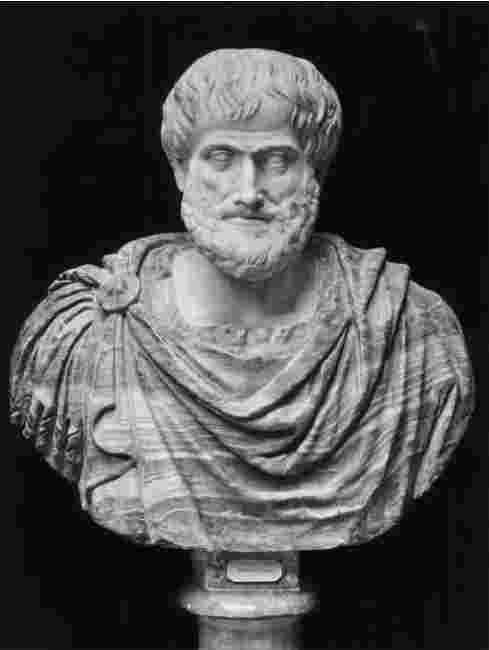

亚里士多德逝于公元前322年秋，终年62岁，正是他事业的巅峰时期：作为一位学者，他的科学探索广泛、哲学思索深邃；作为一名教师，他令希腊最聪明的年轻人为之着迷，并激励着他们；作为一位公众人物，他在动荡的年代过着动荡的生活。他像一位智慧巨人，高居于其他古人之上：他之前的人，无人堪比其学识贡献；而后来者，无人敢比其成就。
关于亚里士多德的性格和个性，人们知之甚少。他出身富贵人家，据说是个花花公子，手上戴着多枚戒指，留着时髦的短发。他消化系统不好，据说身材细长，像个纺锤。他是个优秀的演说家，演讲的时候观点明晰，谈话时的论述令人信服。同时，他还有一种讽刺才智。他树敌很多，他们指责他傲慢。但保存下来的亚里士多德遗嘱却表明，他是个有雅量的人。他的哲学著作是客观的、不带个人好恶的，但却表明他对友谊和自足的珍视，表明他在意识到自己在光荣传统中的地位时，对自己的成就又有一份恰当的自豪。也许他更多的是令人尊敬，而不是令人亲近。
对一个传记作家来说，这样的资料显得有些单薄；我们也不希望能像了解艾伯特·爱因斯坦和伯特兰·罗素那样多地了解亚里士多德，毕竟他生活的时代太久远了，岁月的深渊已吞噬了他生活的细节。然而，有一件事可以确信无疑：亚里士多德的一生都被一种灼热的渴望，即对知识的渴望驱动着。他的整个生涯和每一个已为人知的活动都证明了一个事实：他先于其他人关注如何促进对真理的探索，如何提高人类知识的总和。

图1“亚里士多德是个花花公子，手上戴着多枚戒指，留着时髦的短发。”这个半身像的雕刻者——也许是亚历山大大帝命人制作的——则从另一个角度来看他。
尽管他以一种非凡的投入来追求自己的目标，可他并不认为自己拥有非凡的求知欲；因为他曾断言“所有人都有渴望认识（世界）的天性”，还声称：最恰当地说来，我们中的每个人都是以思想来区分的，因此生命——一种完全人类的生命——就是“思想活动”。在其早期的著作《哲学训词》 [1] 中，亚里士多德宣称“智慧的获得是令人愉悦的；所有的人在哲学中都会感到安适，也希望把其他事放在一边，花些时间在哲学上”。“哲学”一词从词源学上讲，指的是对智慧的热爱。在亚里士多德的书中，哲学家不是一个隐居的大学老师，从事着遥远而抽象的思考；而是寻求“人类的和神圣的一切事物的知识”的人。在他后期的著作《尼各马可伦理学》中，亚里士多德论述道：“幸福”——人们认识自己且感觉最旺盛活跃的一种思想状态——存在于一种充满智力活动的生命中。这种生命是不是过于神圣、人类无法企及？不是的，因为“我们不能听命于那些因为我们是人而督促我们思考人类思想，因为我们是凡人而督促我们思考凡人思想的人。相反，我们应尽可能地使自己不朽，尽可能地按我们身上最精细的元素生活——虽然这类元素在体积上很小，但在能量和价值上却比其他任何元素都更伟大”。
一个人的正确目标是仿效众神，使自己不朽；因为这样做就会变成最完全意义上的人，实现最完整的自我。这种自我实现需要他具有求知欲，而这种求知欲是一个人自然而然要具备的。亚里士多德的“幸福”秘诀也许被认为是苛刻的、适用范围狭窄的，而且，他把自己那种热切的求知欲归结于人类的共性，显然过于乐观。但他的秘诀出自于内心：他劝告我们像他自己那样度过我们的一生。
古代的一位亚里士多德传记作者写道：“他写了大量的书，由于他在每个领域都很优秀，我觉得有必要列举一下。”列举单上约有一百五十项，若按照现代的出版方式出版，也许足足有五十卷。这个列举单没有把亚里士多德的作品全部包括在内——实际上，单子上连他现在最有名的两部书《形而上学》和《尼各马可伦理学》都没有提到。列举单上的作品数量庞大，不过更值得注意的是作品涉及的领域和种类，而不是其数量。他列举的标题目录包括：《论正义》、《论诗人》、《论财富》、《论灵魂》、《论快乐》、《论学科》、《论种和属》、《演绎法》、《定义法》、《政治理论讲稿》（计八本）、《修辞艺术》、《论毕达哥拉斯学派》、《论动物》（计九本）、《解剖学》（计七本）、《论植物》、《论运动》、《论天文学》、《荷马问题》（计六本）、《论磁铁》、《奥林匹克运动会的胜利者》、《格言录》、《论尼罗河》。作品中有探讨逻辑的，有谈论语言的，有阐释艺术的，有剖析伦理学、政治和法律的，有讨论法制史和知识史的，有谈论心理学和生理学的，有谈论包括动物学、生物学、植物学在内的自然史的，有谈论化学、天文学、力学和数学的，有探讨科学哲学的，有探讨运动、空间和时间之本质的，有探讨形而上学和知识理论的。随便选择一个研究领域，亚里士多德都曾辛勤耕耘过；随便说出一个人类努力探索的方面，亚里士多德都曾经论述过。
这些作品中，不足五分之一保存了下来。但幸存下来的这一小部分包含了他研究的大部分内容。尽管他生平的大部分作品遗失了，我们仍能获得他思想活动的全貌。
现存著述中的大部分当初也许并不打算供人阅读；因为当代所保存的这些专题论述似乎是由亚里士多德的讲稿组成的。这些讲稿是供自己使用而不是用于公开传播。毫无疑问，讲稿在数年的时间中经过了不断的修改。而且，尽管一些专题论述的结构由亚里士多德自己确定，其他的论述却很明显地是由后来的编辑们拼凑起来的——其中《尼各马可伦理学》就不是一个统一的著作，《形而上学》很明显地是由一组论文组成，而不是一篇连贯的专题论文。有鉴于此，当我们看到亚里士多德作品的风格经常不相统一时，就不足为奇了。柏拉图的对话是精雕细刻的人工作品，语言技巧映衬着思想的微妙。而亚里士多德的大部分作品都语言简练，论点简明。其中可以见到突然的过渡、生硬的重复和晦涩的隐喻。好几段连贯的阐述与断断续续的略记夹杂在一起。语言简朴而有力。如果说论述语言看起来未加润色，部分原因乃在于亚里士多德觉得没有必要祛除这种粗糙。但这只是就部分作品而言，因为在揣摩过科学作品的恰当写作风格之后，亚里士多德喜欢简约。“在每一种教导形式中，都要略微关注语言；因为在说清事物方面我们是这样说还是那样说的，这是有区别的。但这种区别也不是特别大 ：所有这些事物都是要展示给听众的——这也是为何没有人用这种方法教授几何的原因。”亚里士多德能写出很精美的文章，文笔受到古代读过他未保存下来的著作的评论家垂青——现存的一些作品写得铿锵有力，甚至华丽而富有神韵。但华丽辞藻是无用的，精美的语言结不出科学的果实来。
如果读者打开亚里士多德的书就想找到对某个哲学主题的系统论述，或想发现一本有条理的科学教科书，难免会很快打住：亚里士多德的专题论述可不是那样的。不过，阅读这些论述也不是枯燥的长途跋涉。亚里士多德有一种活力，这种活力越吸引人就越容易被了解；这些论述毫无柏拉图对话中的掩饰笔法，以一种直接而刻板的方式（或者至少显得是这样）揭示作者的思想。不难想象的是，你能在不经意中听到亚里士多德的自言自语。
最重要的是，亚里士多德的作品是很难阅读的。一个好的阅读方法是：拿起一本专题论文时把它看做一组讲稿，设想自己要用它们讲课。你必须扩展和阐述其中的论点，必须使过渡显得清晰；你可能会决定把一些段落转换成脚注或留做下次讲课用。如果你有演讲才能，会发现幽默自在其中。得承认的是，亚里士多德的作品不仅难读，还令人困惑。他在这里是什么意思呢？这个结论究竟是如何由那些前提推导来的？为何这里会突然出现令人费解的术语？一个古代的批评家曾声称“他用晦涩的语言来迂回绕过难以阐述的主题，以此避免别人的反驳——就像章鱼喷射黑墨一样，使自己难以被捕获”。每个读者有时都会把亚里士多德看做章鱼。但令人懊恼的时刻没有欢欣的时刻多。亚里士多德的论述给读者提出一个特殊的挑战；一旦你接受挑战，就不会再读其他形式的论述了。